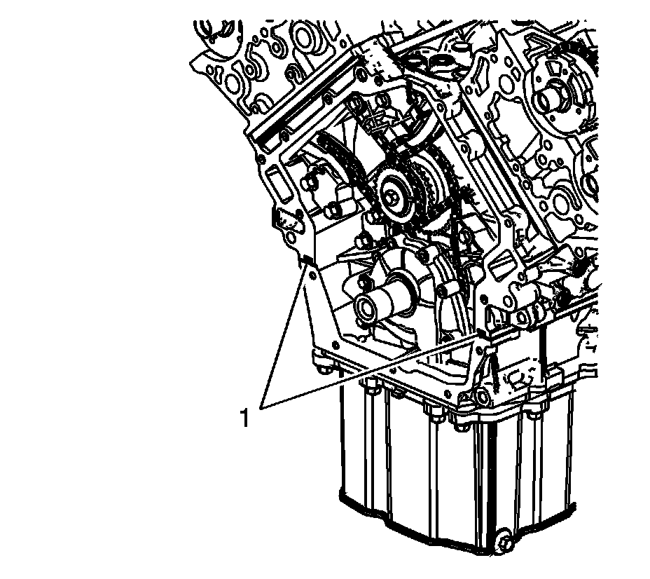
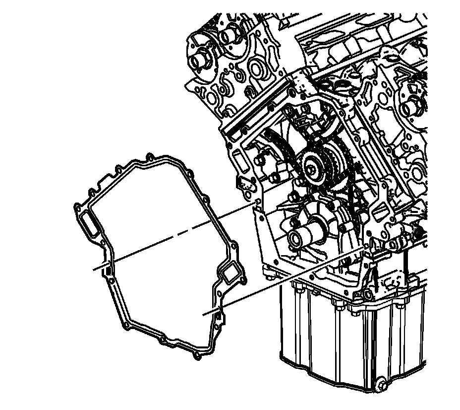
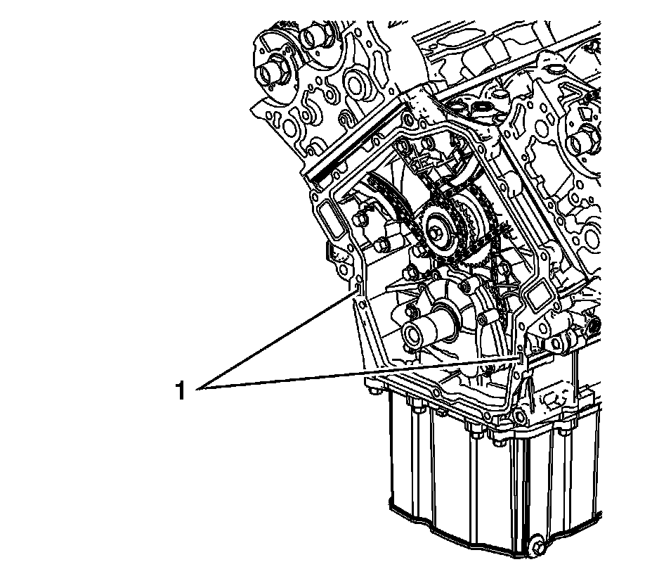
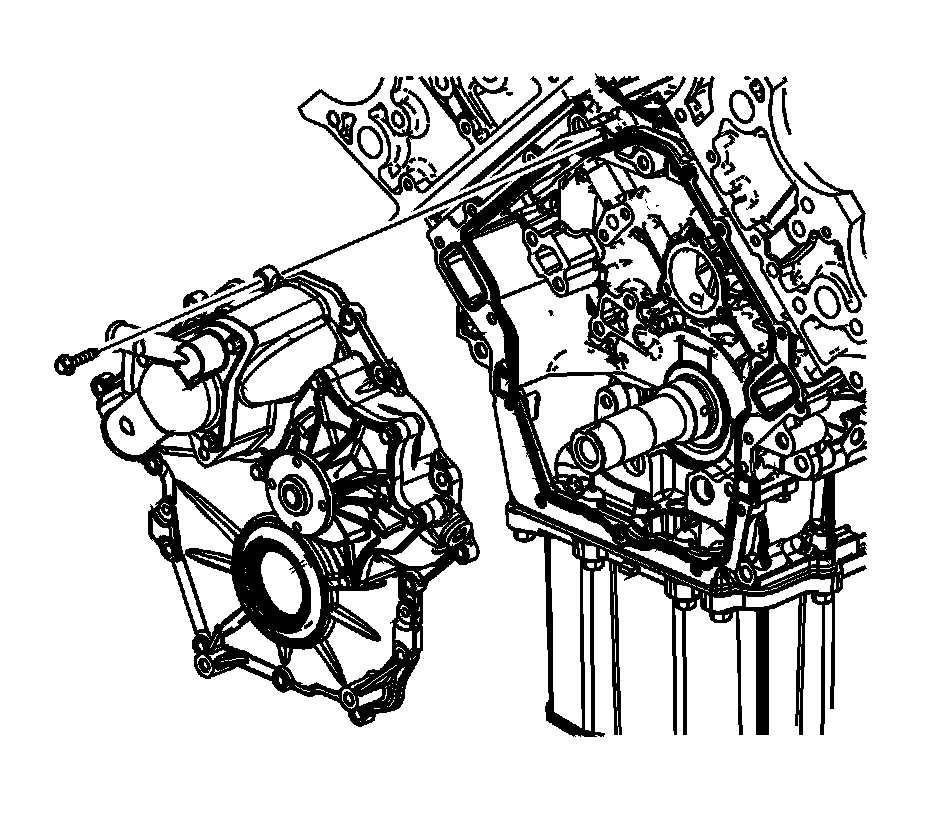
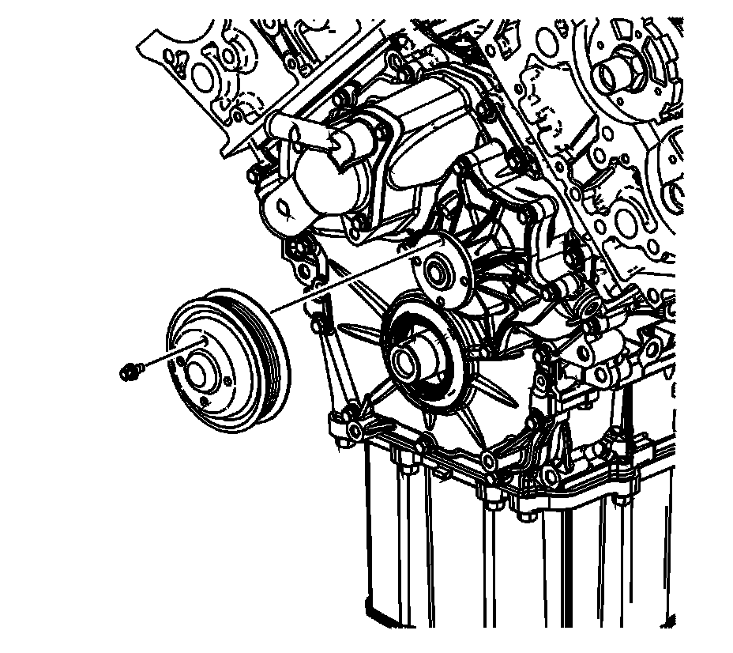

118. Engine Front Cover Installation
Engine Front Cover Installation

1. Place a small amount of sealant GM P/N 12378521 (Canadian P/N 88901148) or equivalent at the split line of the upper and lower crankcases (1).

2. Place the NEW engine front cover gasket over the crankcase dowel pins.

3. Place a small amount of sealant GM P/N 12378521 (Canadian P/N 88901148) or equivalent at the engine front cover gasket pad area located on top of the split line of the upper and lower crankcases (1).

4. Place the engine front cover in position on the crankcase.
5. Apply the thread locking compound GM P/N 12345382 (Canadian P/N 10953489) or equivalent to the threads of the engine front cover bolts.
6. Install the engine front cover bolts.

Notice: Refer to Fastener Notice (Fastener Notice) .
7. Tighten the engine front cover bolts in the sequence shown.
Tighten the engine front cover bolts in proper sequence to 15 N.m (11 lb ft).

8. Install the water pump pulley.
9. Install the water pump pulley bolts.
Tighten the water pump pulley bolt to 10 N.m (89 lb in).